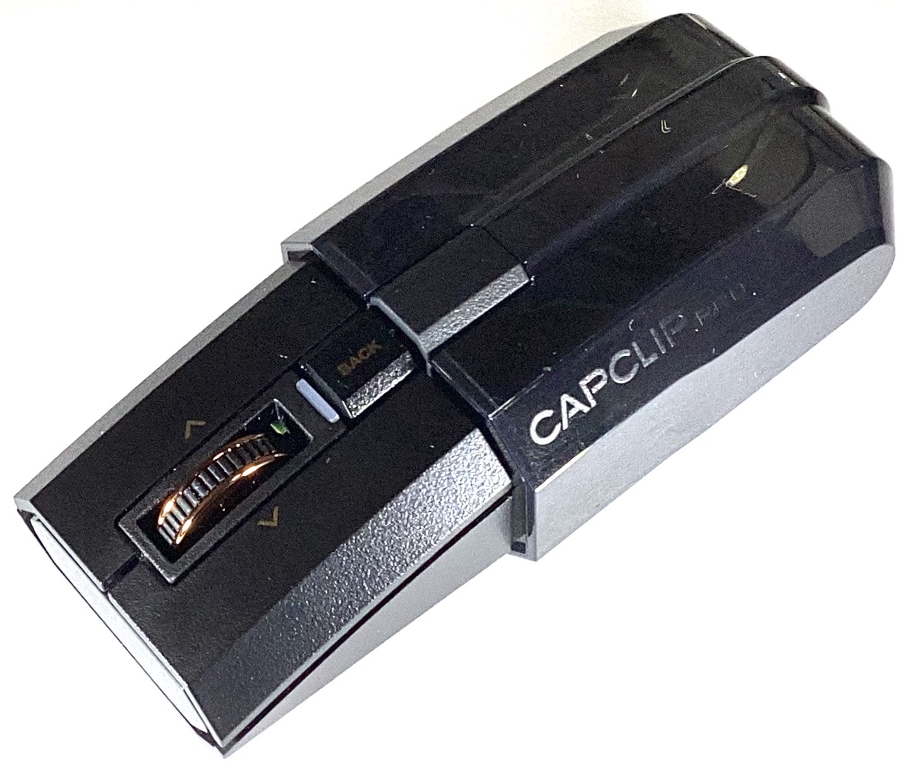

皆さんの中に、パソコンと共にマウスを使っている方は少なくないと思います。
エルゴノミクスデザインのものからシンメトリーデザインのもの、
そして今回紹介するモバイルマウスなど、さまざまなカテゴリーがあります。
持ち運んで使うマウスって、小さく、軽い上に使いやすいものである必要があります。
その1つの選択肢として、CAPCLIP PROを紹介します。

このマウス、なんとキャップ式になっていて小さくなるのです。
「えっ？」ってなる方の方が多いでしょうから画像を載せますね。
上の写真の前側と後ろ側を引っこ抜いて分離、逆向きにして差し込むと以下のようになります。

ロマンの塊ですね。
これでいて以下の特徴を持ちます。
- 戻るボタン搭載
- チルトホイール搭載(横にもスクロール可能)
- 1600dpi
- Ultimate Blue LED(ほぼ全ての材質の上で操作可能)
いや、これがポケットに入るマウスだと考えると驚異的ですね。
マジで何でも出来ちゃうので、おすすめですよ。
持ち運びマウスに小ささは正義です。